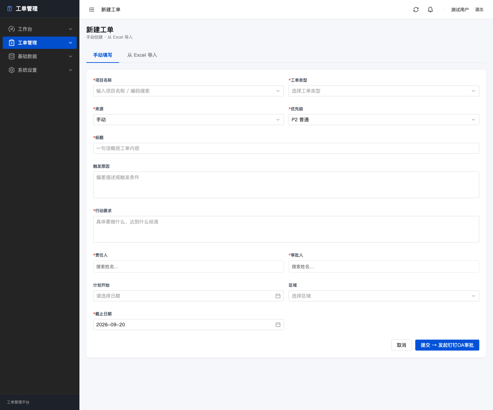

工单平台 v0.7.0 测试报告
2026-09-18 · 本地代码与隔离测试库
| 层级 | 验证 | 结果 |
|---|---|---|
| L1 结构 | 迁移单一 head、临时数据库迁移、差异格式、TypeScript 与生产构建 | 通过 |
| L2 逻辑 | 隔离测试库 234 项后端测试 | 通过 |
| L3 集成 | 14 项 UI 冒烟测试 | 通过 |
| L4 实例 | 生产部署及真实钉钉组织读取/通知未获授权，未执行 | 未执行 |
生产部署、真实钉钉组织读取与对外通知未验证；构建仍提示主包体积较大。
新建工单页视觉验收

2026-09-18 · 本地代码与隔离测试库
| 层级 | 验证 | 结果 |
|---|---|---|
| L1 结构 | 迁移单一 head、临时数据库迁移、差异格式、TypeScript 与生产构建 | 通过 |
| L2 逻辑 | 隔离测试库 234 项后端测试 | 通过 |
| L3 集成 | 14 项 UI 冒烟测试 | 通过 |
| L4 实例 | 生产部署及真实钉钉组织读取/通知未获授权，未执行 | 未执行 |
生产部署、真实钉钉组织读取与对外通知未验证；构建仍提示主包体积较大。
